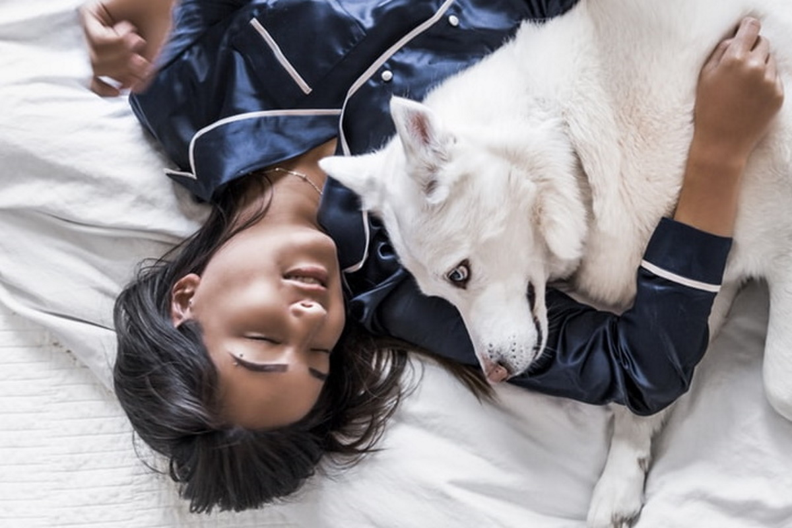
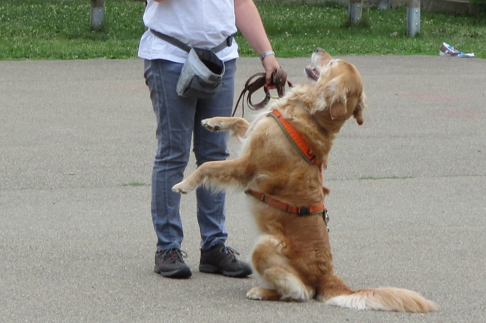
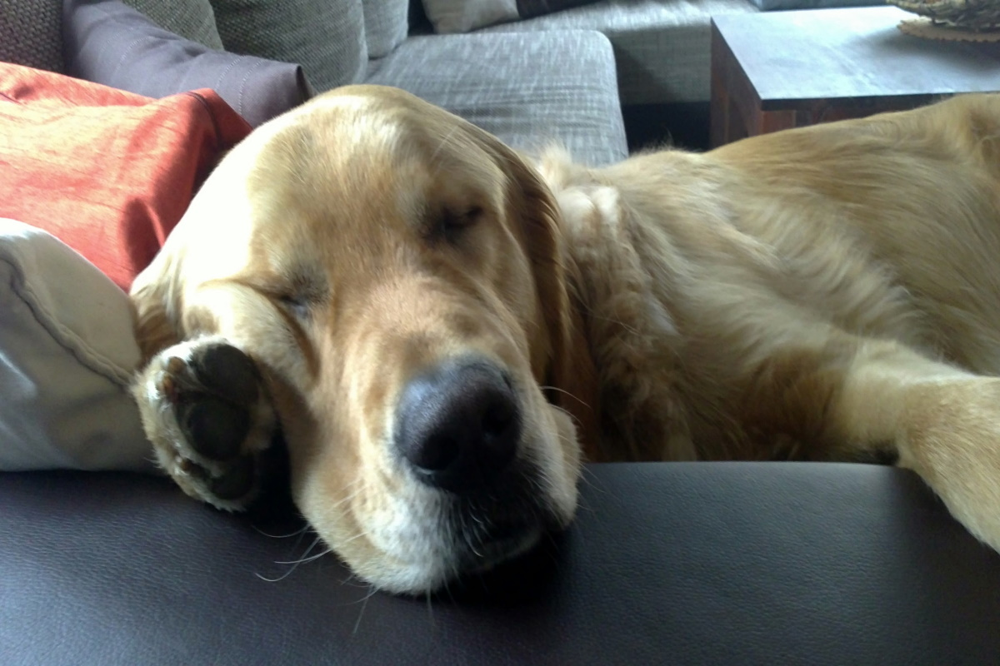

Dies ist mit der Zeit zu meinem besonderen Steckenpferd geworden.
Ich erlebe nämlich immer wieder, dass so mancher Hund aufgrund von unerwünschtem Verhalten in die Schublade "Problemhund" gesteckt wird.
Dabei kann er sich durch mehr Beschäftigung zu einem zufriedeneren, ruhigeren und aufmerksameren Gefährten wandeln.
Um dies zu erreichen, bedarf es bei Weitem nicht so viel Aufwand wie man zuerst denken mag.
Man muss nicht einmal den Weg zur Hundeschule auf sich nehmen.
Das Schlüsselwort ist "Alltag" und der Alltag findet nicht in der Hundeschule statt,
sondern zu Hause in den eigenen vier Wänden, im eigenen Garten und auf den täglichen Spaziergängen.
Hunde lieben es kleine Aufgaben im Haushalt erledigen zu dürfen. So mancher Vierbeiner blüht regelrecht auf,
wenn er vor Besuchern seinen Lieblingstrick zeigen darf und es gibt fast keine Fellnase die nicht gerne einem Duft auf den Grund geht.
Bindung - Was ist das?

Hundetrainer und Hundehalter sprechen allzu schnell von guter oder schlechter Bindung zwischen Menschen und
ihren Hunden. Aber selbst unter diesen Fachleuten wird Bindung leider oft an völlig falschen Merkmalen "erkannt"
oder "aberkannt". Oder anders formuliert: Verhaltensweisen von Hunden werden als Merkmale für eine gute Bindung
gewertet, obwohl diese Merkmale nichts mit guter Bindung zu tun haben und andererseits werden Verhaltensweisen,
die eine gute Bindung kennzeichnen, gar nicht erkannt oder falsch, im schlechtesten Fall sogar als schlechte
Bindung interpretiert. Bei Wikipedia
ist die theoretische Bedeutung von Bindung zwischen Mensch und Hund ausführlich beschrieben.
In der Trainings-Praxis werden wir mit folgenden Themen arbeiten, die eine Bindung zwischen Mensch
und Tier ausmachen können:
Fürsorge
Qualitätszeit
Spaziergänge
Spiel & Spaß
Tür zu!
Ich habe meinem Golden Retriever Rüden zum Beispiel den Befehl "Tür zu" beigebracht.
Unter der Rubrik Medien findest du noch mehr Bilder und Videos,
die in Richtung Auslastung des Hundes gehen. Hier geht's dann unter anderem auch um Nasenarbeit bei den Spaziergängen.
Trickdogging - auch für Senioren

Es gibt viele Möglichkeiten, seinem Hund kleine Kunststücke beizubringen. Das gilt für alle Altersklassen.
Ein Hund, der schon in die Jahre gekommen ist und gar keine aufregenden Spaziergänge mehr nötig hat, kann so vom Kopf
her noch lange fit bleiben.

Der Lohn für jede Trainingsstund', ist ein zufriedener, schlafender Hund.
Durch meine jahrelange Erfahrung auf diesem Gebiet, kenne ich die Vorlieben der einzelnen Rassen und erarbeite
gemeinsam mit dem Besitzer einen passenden Auslastungsplan der in den Alltag des Menschen integriert werden kann.
Diesen Plan bauen wir dann Stück für Stück gemeinsam im Training auf und schaffen damit die Grundlage für ein
glückliches und zufriedenes Miteinander.